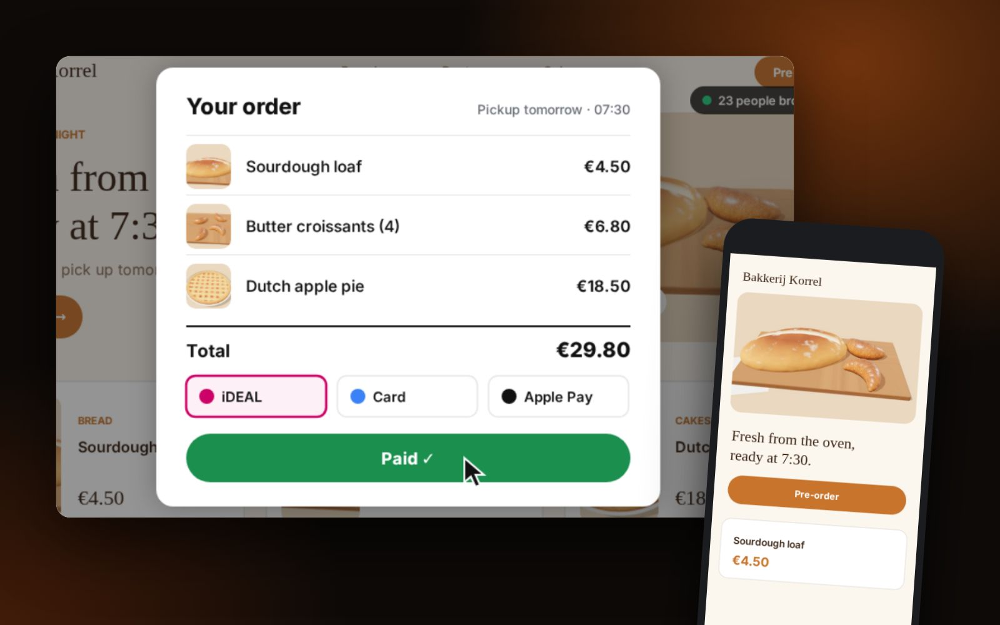

You have registered your business with the Dutch Chamber of Commerce (KvK), opened a business bank account and now you need a website. A lot of what works elsewhere works here too, but a few things are specific to the Netherlands. This checklist covers them.
Tick it off as you go
The checklist at the end of this article can be ticked. Your ticks stay saved on this device, so you can come back to it.
1. The details that must be on your site
Dutch and EU rules expect your website to show who you are and how to reach you. In practice that means, usually in the footer or on a contact page:
- your business name;
- an address where you can be reached;
- an email address (and ideally a phone number);
- your KvK number;
- your VAT identification number (btw-id), if you do VAT-liable work.
If you collect personal data, through a contact form or bookings for example, you also need a privacy statement under the GDPR (AVG in Dutch). Tracking and advertising cookies need consent first.
2. Dutch, English or both?
If your customers are mostly Dutch consumers, a Dutch website will feel more trustworthy to them, even though most Dutch people speak English well. If you sell to internationals, other businesses or customers abroad, English may be enough. Many businesses do both. We wrote a separate guide: Dutch, English or both?
3. A .nl domain
A .nl domain signals a local business to Dutch customers and is easy to register. Make sure it is registered in your name (you are the “holder”), not your web designer’s, so you can always move it.

4. iDEAL for payments
If you sell online to Dutch customers, they will look for iDEAL, the bank payment method almost everyone here uses (it is gradually being rebranded to Wero). You add it through a payment provider such as Mollie, Stripe or Shopify Payments. See iDEAL explained.
5. Prices with VAT
Dutch consumers expect prices including 21% VAT (or 9% for some goods and services). Business customers usually see prices excluding VAT. Be clear which one you show.
6. Get found in Google and Maps
- Create a Google Business Profile so you appear in Google Maps. See our step-by-step guide.
- Write pages for the services people search for, in the language they search in.
- Add your site to Google Search Console and submit your sitemap.
7. Mobile first
Most people will see your site on a phone first. Test every page on a phone: the menu, the contact button, the booking or checkout.
Quick checklist
- Business name, address, email and KvK number on the site
- VAT ID (if applicable)
- Privacy statement; consent for tracking cookies
- Domain and hosting in your own name
- Language choice made (Dutch, English or both)
- iDEAL, if you sell online
- Google Business Profile and Search Console
Want help with it, in English? Ace 360 builds websites for businesses in the Netherlands, with an estimate before the first call.